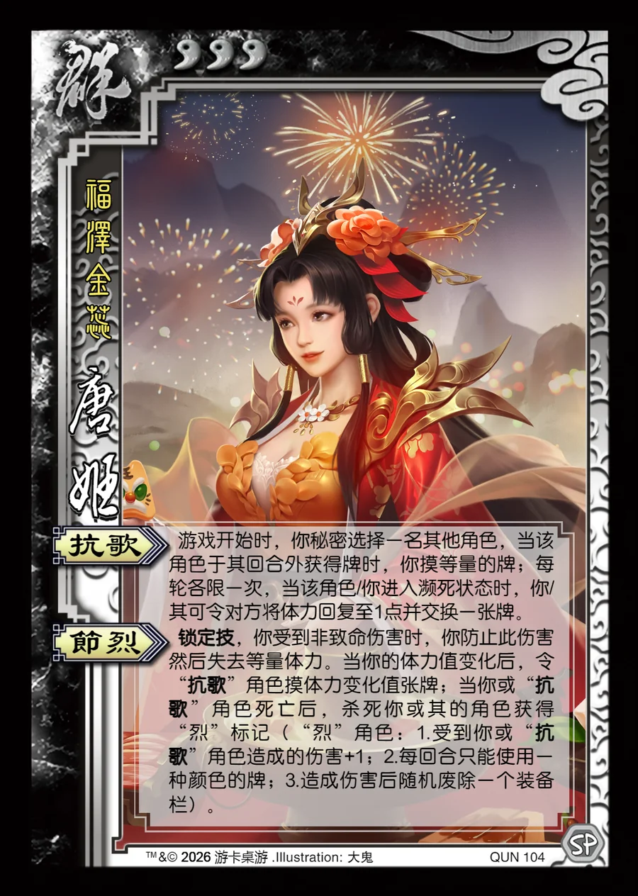

点击卡面查看大图
群
唐姬
♥3福泽金蕊
抗歌
游戏开始时，你秘密选择一名其他角色，当该角色于其回合外获得牌时，你摸等量的牌；每轮各限一次，当该角色/你进入濒死状态时，你/其可令对方将体力回复至1点并交换一张牌。
节烈锁定技
锁定技，你受到非致命伤害时，你防止此伤害然后失去等量体力。当你的体力值变化后，令“抗歌”角色摸体力变化值张牌；当你或“抗歌”角色死亡后，杀死你或其的角色获得“烈”标记（“烈”角色：1.受到你或“抗歌”角色造成的伤害+1；2.每回合只能使用一种颜色的牌；3.造成伤害后随机废除一个装备栏）。